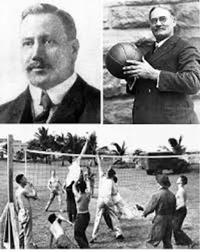
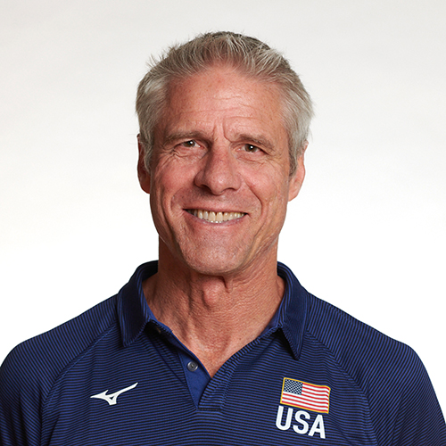
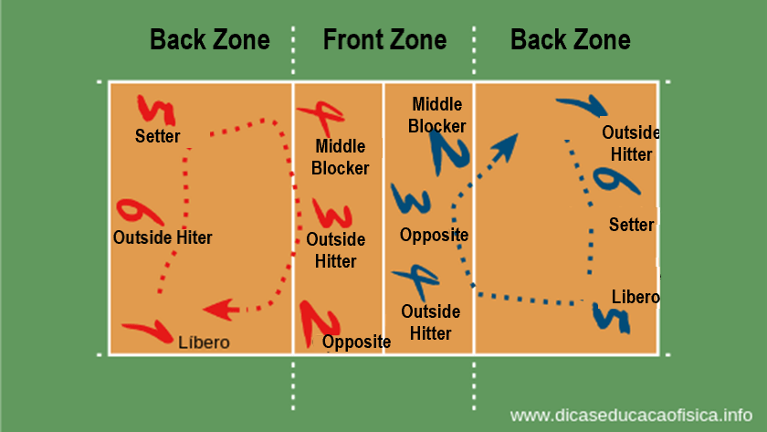

This summary will inform you all about the orgin of volleyball, famous players, and postions.
According to legend, William G. Morgan created the sport of volleyball in 1895 so that individuals who found basketball's "bumping" or "jolting" to be too taxing would have a different physical activity to turn to. The ball, net, and hand-use all originated in basketball, tennis, and handball, respectively. While technically a volleyball match, it gained some competitive flavour with the addition of baseball-inspired innings, eventually referred to as sets. Volleyball was officially selected to spell as a single word in 1952. A sport that traced its origin to basketball, baseball, tennis and handball - and now estimated to be played by over 800 million globally - had thus been established.
Learn more about the history of Volleyball
The top 5 famous volleyball players world wide are Karch Kiraly, Kerri Walsh Jennings, Misty May-Treanor, Lorenzo Bernardi, and Sheilla Tavares De Castro. Karch plays for the US team, he is the only volleyball legend to win at every level as a player and coach. Kerri also plays for the US volleyball team, she is the worlds number 1 volleyball female player ever. The last indiviual from the US is Misty, She formed an unstoppable partnership with Kerri Walsh for nearly a decade. Lorenzo is from Italy, he made headlines in the 1980s and 90s for his outstanding performance on the court. He played many postions including being the setter, outside hitter, and defensive specialist. The last person on our top 5 list is Castro, who is a two time Olympic champion and three-times Pan-American Cup, winner.
Learn more about Famous Volleyball Players
The specific responsibilities that players play on the court while playing volleyball are known as positions. They are divided into three main groups: setters, offence, and defence. On the court, each position is given a designated spot that is fixed and never moves. For instance, outside hitters often occupy the fourth location on the court, which is the left front-court position. There are six specific spots on the volleyball court that are identified by their numbers, such as "the 5 positions." Coaches typically want to have at least two players for every position on their teams to enable for substitutions throughout the game. Hence, volleyball teams typically field a team of 10 to 14 players.
The main positions in volleyball are Setter (S), Outside Hitter (OH), Opposite Hitter (Opp or RS), Libero (L), and Middle Blocker (MB or MH). The setter (S) is responsible for distributing the ball to their teammates. A libero is specialized in passing the ball, setting the ball from the back row, playing defense. The outside hitter (OH) aka Pin hitter is responsible for attacking the ball from the front row and playing defense from the back row. The opposite hitter (Opp/RS) (also known as a right-side hitter) is typically the second attacker and is responsible for hitting the ball from the back row. The middle blocker (MH) aka middle hitter is responsible for blocking shots at the net and attacking the ball in the front row. The other two postions is called Defensive Specialists and Serving Specialist. Defensive Specialists are much like a libero, a defensive specialist plays in the back row and is responsible for playing defense and receiving serve. A serving specialist is a player who subs in just to serve. These players typically have a very tough or very consistent serve, and they come in for a player who is less strong.
Learn more about Volleyball postions